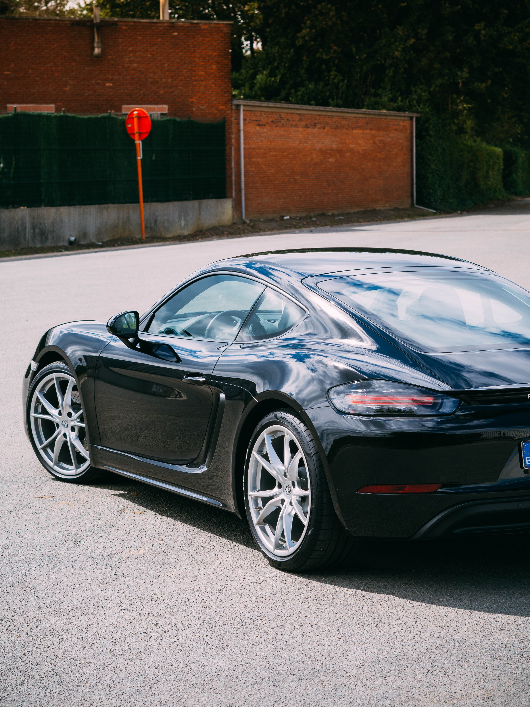

Porsche Cayman är en av Tysklands stoltheter. Med en relativt bra budget får man så mycket man kan med vad pengarna räcker till. Med en 300 hästkraft motor driven av 4 eller 6 cylindrar på 2.0 liter, 2.5 liter om man väljer S modellen med en turbo och 350 hästkrafter. Porsche Cayman är bland de bästa entry-level bilarna man kan få, inte på tok för dyr men ändå prestanda som kan utmana folk på banan. Med 0-100km/h på 4.4 sekunder, max hastighet på 285km/h och 380-420NM vridmoment är detta en väldigt underskattad bil. Många tvivlar om dens prestanada och de får möta konsekvernserna när Cayman susar förbi dem.